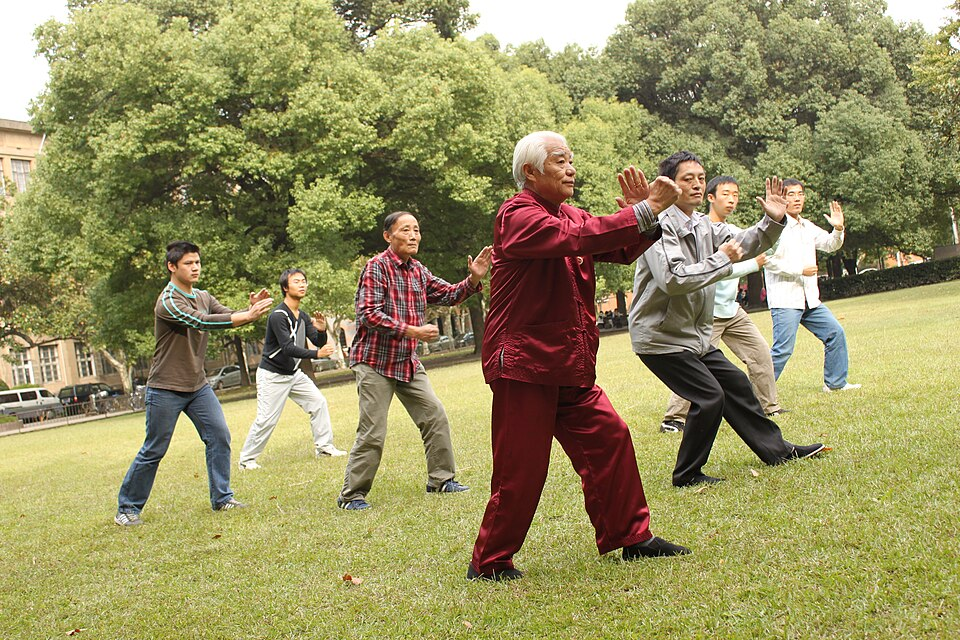

Czym jest taijiquan, jego historia, filozofia yin-yang i qi, główne style oraz dziesięć zasad ruchu
Aktualizacja: 2026-06
Tai chi (chiń. taijiquan, 太極拳 — dosł. „pięść Najwyższej Ostateczności") to wywodząca się z Chin wewnętrzna sztuka walki, która we współczesnym świecie praktykowana jest przede wszystkim jako łagodne ćwiczenie zdrowotne i forma medytacji w ruchu. Charakteryzują ją powolne, płynne i nieprzerwane sekwencje ruchów wykonywane w skupieniu i zsynchronizowane ze spokojnym oddechem.
Pełna nazwa taijiquan zalicza ją do tzw. neijia (内家) — „szkół wewnętrznych" chińskich sztuk walki. W odróżnieniu od stylów „zewnętrznych" (waijia, np. shaolin), które opierają się na sile mięśni, szybkości i sprawności fizycznej, sztuki wewnętrzne kładą nacisk na rozluźnienie, prawidłową strukturę ciała, równowagę, oddech oraz pracę z wewnętrzną energią (qi).
W praktyce oznacza to ruch powolny, płynny i ciągły — jeden gest przechodzi w następny bez zatrzymania, „jak nieprzerwany strumień". Choć tai chi ma korzenie bojowe (każdy ruch ma ukryte znaczenie — uderzenie, blok, dźwignię czy rzut), to ogromna większość współczesnych adeptów ćwiczy je dla zdrowia, spokoju umysłu i równowagi, a nie dla walki.

Wspólne, powolne ćwiczenie na świeżym powietrzu — typowy widok w Chinach i na świecie.
Korzenie tai chi sięgają Chin i są mieszanką udokumentowanej historii oraz legendy. Tradycja przypisuje stworzenie wewnętrznej sztuki walki taoistycznemu mnichowi Zhang Sanfengowi, który miał — według podań z gór Wudang — opracować jej zasady, obserwując walkę żurawia z wężem. Jest to jednak legenda, a nie potwierdzony fakt historyczny.
Udokumentowane początki tai chi wiążą się z rodziną Chen i wioską Chenjiagou (prowincja Henan), gdzie najpóźniej w XVII wieku praktykowano system, z którego wywodzą się wszystkie dzisiejsze style. Przełom w popularyzacji nastąpił w XIX wieku za sprawą Yang Luchana (1799–1872), który nauczył się sztuki od rodziny Chen, a następnie nauczał w Pekinie, tworząc własny, bardziej łagodny i równomierny styl — Yang. To właśnie dzięki niemu tai chi rozprzestrzeniło się w całych Chinach, a później na świecie.
| Okres | Wydarzenie |
|---|---|
| Legenda | Zhang Sanfeng (mnich z gór Wudang) jako mityczny twórca sztuki wewnętrznej. |
| XVII w. | Udokumentowana praktyka w rodzinie Chen we wsi Chenjiagou — najstarszy znany styl. |
| XIX w. | Yang Luchan uczy się od rodziny Chen i tworzy styl Yang, nauczając w Pekinie. |
| XX w. | Powstają kolejne style (Wu, Sun, Hao); w 1956 r. opracowano uproszczoną formę 24 ruchów. |
Tai chi jest mocno zakorzenione w chińskiej filozofii, zwłaszcza w daoizmie. Sama nazwa taiji (太極) — „Najwyższa Ostateczność" — odnosi się do stanu, z którego wyłaniają się dwie uzupełniające się siły: yin (miękkość, bierność, ustępowanie) i yang (twardość, aktywność, napieranie). Cały ruch tai chi to nieustanna gra przeciwieństw: pełne i puste, otwieranie i zamykanie, wdech i wydech, ruch w przód i w tył.
Drugim filarem jest pojęcie qi (氣) — życiowej energii, która według tradycji przepływa przez ciało. Powolny, rozluźniony ruch i głęboki oddech mają sprzyjać jej swobodnemu krążeniu. Z tej filozofii wynika też kluczowa zasada strategiczna: miękkość pokonuje twardość — zamiast siłować się z napierającą siłą, adept uczy się ją przyjąć, poprowadzić i zneutralizować, wykorzystując równowagę i strukturę zamiast surowej siły mięśni.
Z pierwotnego stylu Chen wyrosło kilka głównych szkół. Różnią się tempem, wielkością ruchów i poziomem trudności, ale dzielą te same zasady:
| Styl | Charakterystyka |
|---|---|
| Chen | Najstarszy styl. Łączy powolne fragmenty z nagłymi eksplozjami siły (fa jin) oraz niskie postawy i ruchy spiralne (silk reeling) — najbardziej wymagający fizycznie. |
| Yang | Najpopularniejszy na świecie. Duże, otwarte ruchy w równym, wolnym tempie, bez gwałtownych przyspieszeń — łagodny i przystępny dla początkujących. |
| Wu | Wywodzi się ze stylu Yang. Mniejsze, bardziej zwarte ruchy i charakterystyczne lekkie pochylenie sylwetki; nacisk na pracę wewnętrzną. |
| Sun | Najmłodszy z głównych stylów. Wysokie, zwinne postawy, płynna praca nóg (kroki „dostawne") i elementy pokrewnych sztuk (xingyi, bagua). |
| Hao (Wu/Hao) | Bardzo kompaktowy i subtelny styl, skupiony na drobnych, wewnętrznych ruchach i precyzji struktury — rzadszy, uważany za „zaawansowany". |
Klasyczne „dziesięć zasad" (przypisywanych mistrzowi Yang Chengfu) to fundament prawidłowego ruchu w tai chi. Warto wracać do nich na każdym etapie nauki: